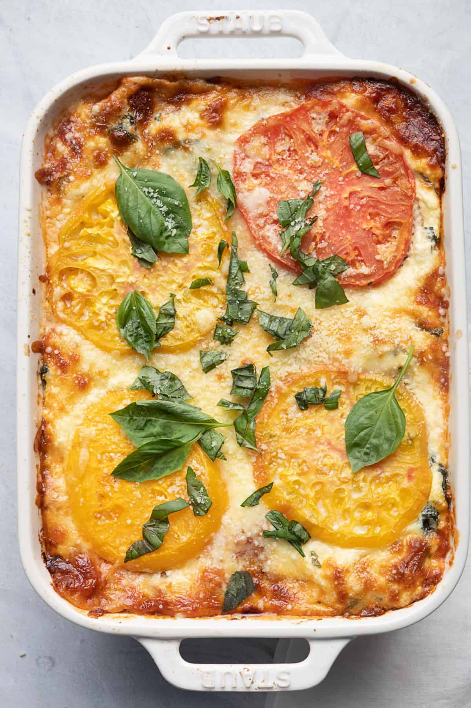

Back to home
Lasagna with fresh tomtato's

Ingredients & substitutions
-
Eggs: Beaten eggs are mixed with the ricotta to allow it to set,
so that it doesn’t ooze out when you cut into the lasagna.
-
Cheese: Use ricotta, parmesan and mozzarella to make this tomato lasagna.
The ricotta adds a great creamy texture, the parmesan gives a stronger
and sharper cheese flavor and the mozzarella creates those perfect cheese pulls.
-
Seasoning/Aromatics: Fresh basil, fresh garlic salt and pepper.
-
Spinach: This adds vegetables to the tomato lasagna to bulk it up for the meatless option.
-
Lemon: The lemon juice and lemon zest add a burst of fresh flavor,
and the acid helps to cut through the creamy ricotta.
-
Tomatoes: Heirloom tomatoes are perfect for the lasagna as they are so much more flavorful than regular.
In a pinch, large beefsteak tomatoes, or vine-ripened will work well.
slice them and layer them with the other ingredients.
-
Lasagna: Use no-boil lasagna sheets for this recipe.
The moisture in the rest of the dish will cook the sheets.
-
Tomato sauce: Use plain tomato sauce for that authentic lasagna flavor
or make your own marinara from scratch.